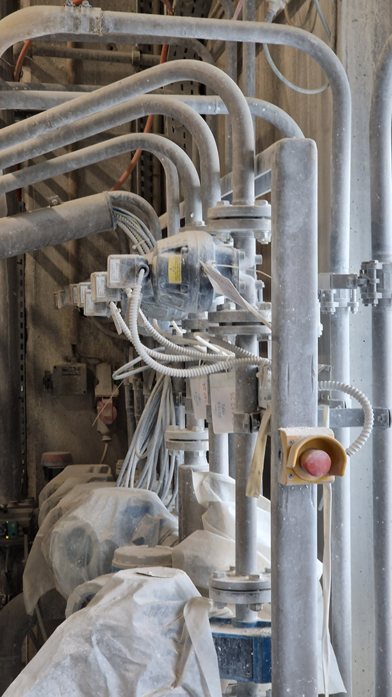
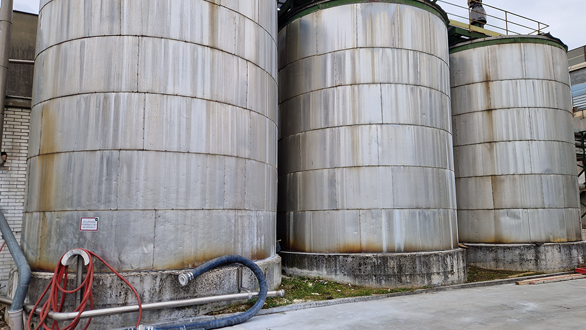
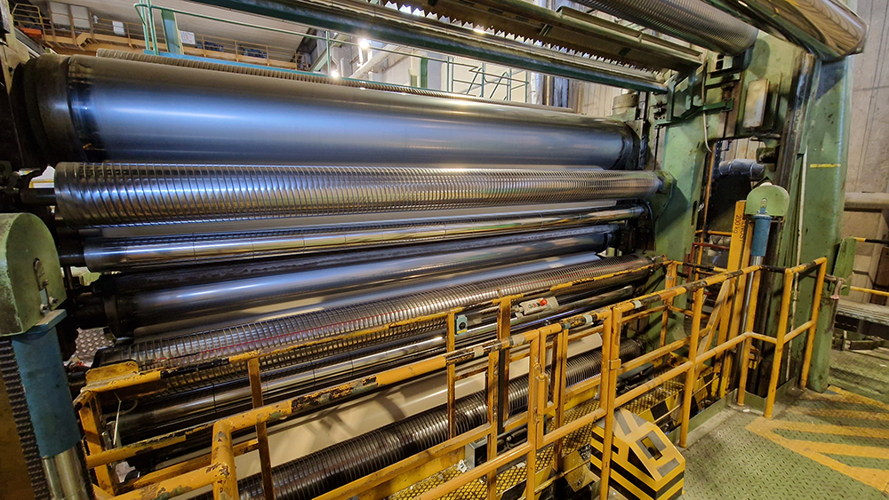
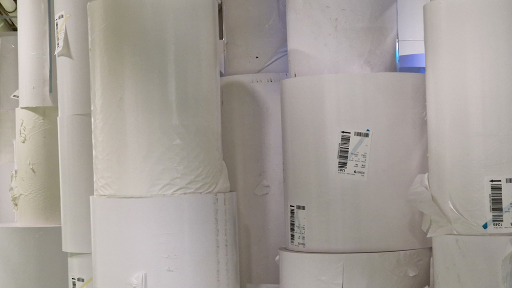
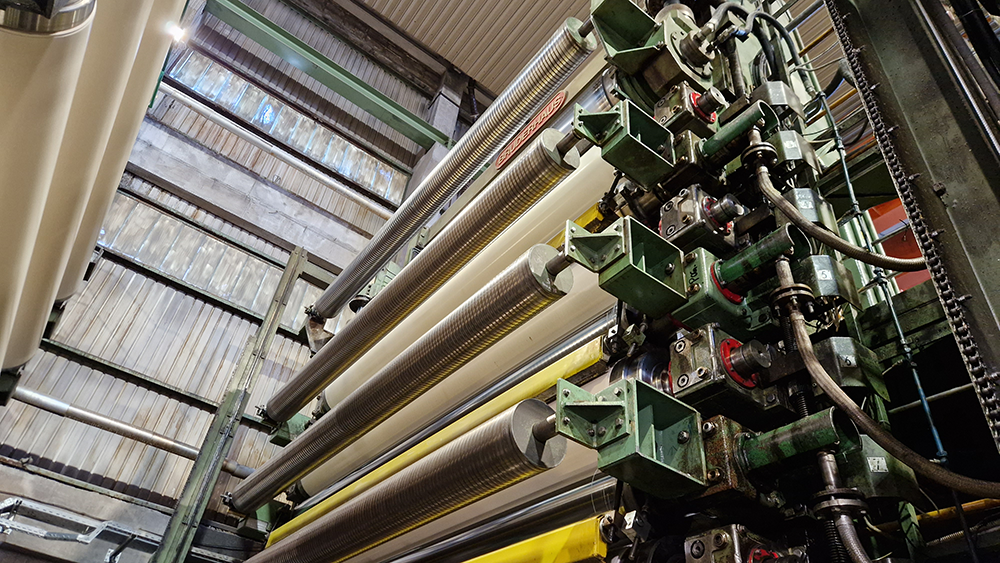
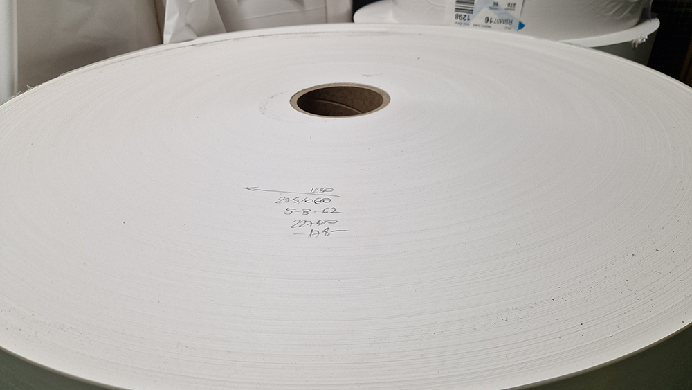

Paper mills
ELCON provides specialized automation solutions for the paper industry, focusing on upgrades, reconstructions, and seamless integration of new equipment.

What ELCON does.
ELCON provides specialized automation solutions for the paper industry, focusing on upgrades, reconstructions, and seamless integration of new equipment. Our expertise spans both the process and machinery sides of paper mills, from stock preparation and coating kitchens to drive system replacements on super calenders.
We ensure that production continues with minimal interruptions, even during reconstructions and maintenance shutdowns, by rigorously testing all modifications in multiple phases.
Electrical design
- 01Designs are based on client-supplied material lists, signal lists, and P&ID diagrams.
- 02Sample loop designs are created and reviewed before full electrical plans are finalized.
- 03Electrical cabinets are built from approved plans and tested during FAT (Factory Acceptance Testing).
- 04On-site, cabinets are wired and retested to ensure flawless integration and compliance.
Programming
- 01Developed from functional specifications provided by the client.
- 02FAT testing includes simulations using digital twins to validate logic and performance.
- 03On-site testing covers IO signal verification and full functional checks.
- 04Safety functions are prioritized throughout development and testing to ensure operational integrity.
The pain points.
- Constant adaptation to market demands requires frequent upgrades and reconstructions
- Legacy systems (e.g., Siemens S5, old drives) pose risks to production reliability
- Integration of new equipment must not disrupt ongoing operations
- Drive systems on machines like super calenders require precise control and synchronization
- Diagnostics and visualization are essential for safe and efficient operation
Our solution.
- Upgrades to Siemens PCS7 systems and replacement of outdated controllers with modern S7/PCS7 platforms
- Drive system modernization using Siemens Sinamics DCM and 6RA80 drives, with cost-effective partial replacements when feasible
- Use of digital twins (e.g., SIMIT) for pre-deployment testing and validation
- Multi-phase testing (FAT and SAT) ensures reliability and minimal downtime during transitions
- Integration of targeted stop systems (Zielhaltesysteme) for precise control in winding/unwinding operations
MM Količevo, Coating Kitchen System Upgrade



The project involved upgrading the coating kitchen automation system from Siemens PCS 7 V8.2 to V9.0 + SP3, along with migrating the tank logic from Step 7 to the PCS 7 environment.
The system was originally composed of two S7-400 subsystems, each serving a distinct function. The first S7-400 handled Step 7 logic for transferring materials from railcars and tank trucks into storage tanks, preparing and cooking starch and CMC, and dosing materials and chemicals into two dispersers. The second S7-400 subsystem operated PCS 7 logic for the dispersers and recipe management using Simatic Batch.
The system also included a reporting module that extracted data from Batch reports and stored it in an SQL database. These records were parsed using SQL commands and formatted for report generation and visualization via Visual Studio and reporting tools. Additionally, a dedicated application was used for editing Batch formulas, calculating precise material quantities based on dry matter percentages.
The goal of the project was to eliminate the outdated Step 7 logic and migrate it into the PCS 7 environment, upgrade the existing system, and improve transparency and maintainability.
To achieve this, ELCON developed new software for PCS 7 and Simatic Batch. The PCS 7 project was upgraded to the latest version, and the existing Step 7 logic (FBD) was analyzed. New CFC code was programmed using the Siemens APL library to manage the storage tanks. Operator screens were redesigned to match the updated system.
For FAT (Factory Acceptance Testing), a SIMIT simulation of the coating kitchen was created. This simulation enabled virtual production runs and fault scenarios, allowing thorough testing of the new logic before deployment.
During commissioning, the hardware was reconfigured, removing the old S7-400 and connecting the existing PROFIBUS network to the new PCS 7 AS station. Virtual machines (OS server, OS clients, and engineering station) were migrated to the client’s server. Data from the old virtual machines was transferred and converted. SAT (Site Acceptance Testing) was performed, followed by trial production.
After completion, the system now operates on a single S7-400 platform within the PCS 7 and Simatic Batch environment, utilizing the APL library.
The integration of tank logic into PCS 7 simplified operations and significantly improved system maintainability. Several obsolete computers were removed from the control cabinet, streamlining the hardware setup. The system was upgraded to the latest version of Microsoft Windows and Siemens PCS 7, ensuring long-term support and scalability.
Line reconstructions are complex undertakings, especially when downtime must be kept to a minimum. Careful planning and execution of as many tasks as possible during live production are essential. With its extensive experience in such projects, ELCON proved to be a reliable and capable partner.
Papirnica Vevče, SK5 Super Calender Drive Replacement




The SK5 is an offline super calender manufactured by Bruderhaus, designed for smoothing paper produced on the paper machine. Paper from the reel is processed through calendering rollers and rewound onto a new drum. The existing SK5 machine featured three regulated drives:
Unwinder drive
Main drive
Rewinder drive
The project focused on upgrading the tension control system for the unwinder and rewinder sections, which maintain constant paper tension during operation. Previously, tension was regulated via DC drives using Siemens 6RA70 thyristor controllers with integrated T400 technology modules. These controllers, and especially the T400 modules, are no longer available, nor is the software or expertise required to configure them.
The goal was to replace the outdated 6RA70 controllers with modern SINAMICS DCM 6RA80 drives and migrate the tension control logic to an S7-400 controller as a software application, with visualization and control via a WinCC HMI. Additionally, a targeted stop function was implemented, which the machine previously lacked.
To achieve this, an extension to the existing electrical design was created. The update included new drive layouts, laser distance sensors, and their integration with the existing S7-400 controller.
New software was developed for the SIMATIC S7-400 and touch panel. Communication logic with the drives was added to the existing program using CFC, along with an interface for seamless integration. The targeted stop function was also programmed in CFC.
While the machine was still in operation, laser distance sensors were installed and cables routed to the electrical cabinets. During the scheduled shutdown, the old drives were removed and replaced with the new SINAMICS DCM units.
The updated program was deployed to the existing controller and touch panel. Drive response was optimized, and the new calender control logic was tested and fine-tuned for targeted operation.
Upon completion, a PID version of the electrical design was prepared, along with user documentation for the updated touch panel interface.
With this upgrade, the paper mill received modern, readily available equipment, simplifying future maintenance. The implementation of the targeted stop function significantly reduced waste, leaving only minimal paper on the unwinder roll. Thanks to optimized drive control, the calender can now operate at full speed, whereas previously, vibration issues forced reduced-speed operation.
Retrofitting legacy machinery in paper mills is a demanding process, as downtime must be kept to a minimum. Thorough preparation and execution of as many tasks as possible during live production are essential. With its extensive experience in this field, ELCON proved to be a reliable and capable partner.
References.
| Customer | Year | Project | Goods and services |
|---|---|---|---|
| Papermill Vevce (Brigl & Bergmeister) | 2022 | Super calender SK5: Targeted stop system (Zielhaltesysteme) | Electrical detail design, Software development |
| Papermill Vevce (Brigl & Bergmeister) | 2021 | Super calender SK6: Targeted stop system (Zielhaltesysteme) | Electrical detail design, Software development |
| Papermill Vevce (Brigl & Bergmeister) | 2021 | Super calender SK5: upgrade of the drive system, replacement of old drives for winder and unwinder Sinamics Simoreg 6RA70 with T400 cards Sinamics 6RA80 without technological card, tensioning control was implement in the PLC, the main drive was not changed (Simoreg 6RA70 without T400 card) | Electrical detail design, Software development, Startup of drives |
| MM Kolicevo (MM BOARD & PAPER) | 2016–2022 | KM2, machine and stock preparation, Siemens DCS: PCS7 | software development |
| MM Kolicevo (MM BOARD & PAPER) | 2016 | KM3, double drum winder, replacement of the drive for the clutch on the unwinder side (Rexroth servo motor + Siemens Sinamics frequency converter) | Electrical detail design Software development, Startup of drives |
| Papermill Vevce (Brigl & Bergmeister) | 2016 | Kleinewefers Super calender SK6: upgrade of the drive system (replacement of old AEG MINISEMI D 380/550+GO DC drives with Siemens Sinamics DCM drives). Main drive was not replaced completely. To optimise the price only the control part of the drive was changed (1Q thyristor stack was kept) | Electrical detail design, Software development, Startup of drives |
| MM Kolicevo (MM BOARD & PAPER) | 2013–2021 | Coating kitchen, 2 dispersers, Siemens DCS: PCS7 + Simatic Batch) | electrical design and software development |
| MM Kolicevo (MM BOARD & PAPER) | 2012–2023 | KM3, water treatment and auxiliaries, Siemens DCS: PCS 7 with pulp and paper library), Auxiliaries: dosing of chemical, fans. | software development |
| MM Kolicevo (MM BOARD & PAPER) | 2012 | KM3, power cabinets, cabinets for the motors: pumps, fans, hatches etc, Siemens SIMOCODE) | electrical design |
| MM Kolicevo (MM BOARD & PAPER) | 2003–2023 | Wood grinding plant, Siemens DCS: PCS7 | electrical design and software development, Startup of large medium voltage drives |
| MM Kolicevo (MM BOARD & PAPER) | 1996–2023 | KM3, stock preparation, Siemens S7-400 PLCs + Siemens WinCC SCADA system) | software development |
Book a free call.
Let’s talk about how ELCON can modernize your paper mill with minimal disruption. Book a free consultation with our team today.